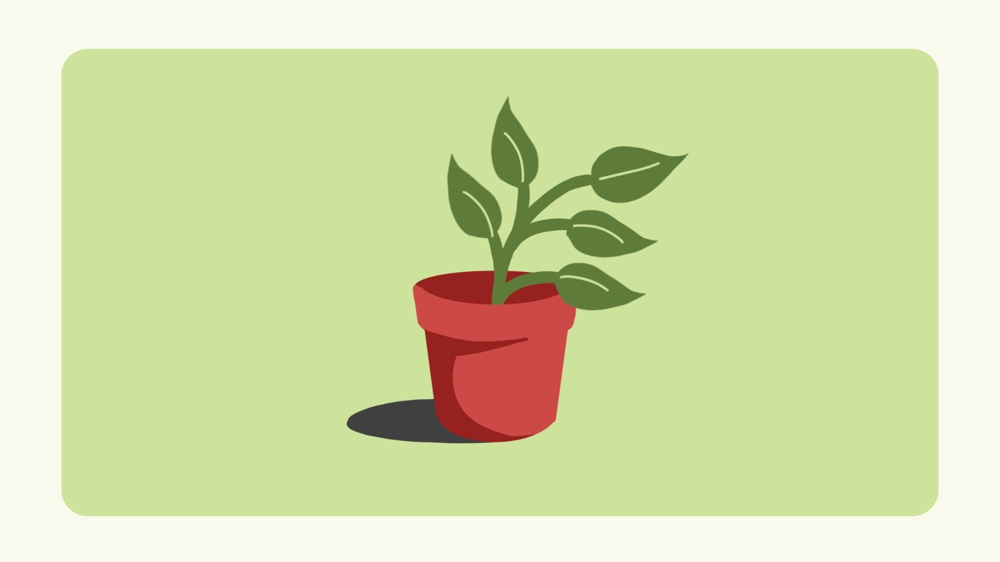
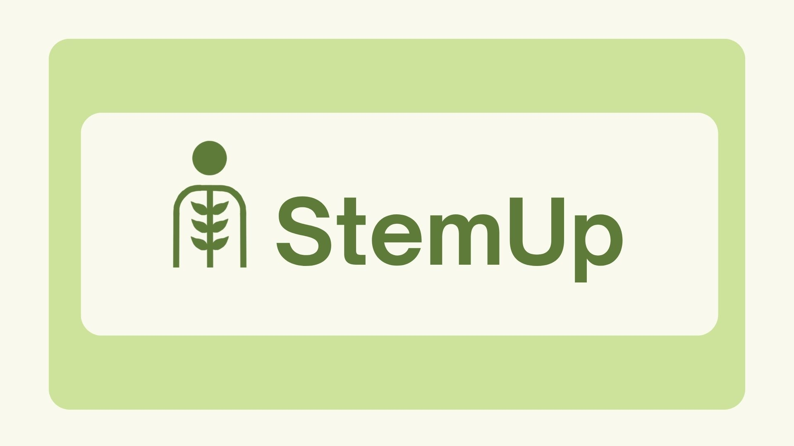
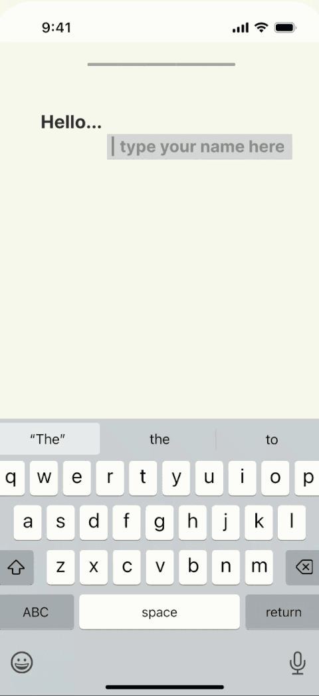
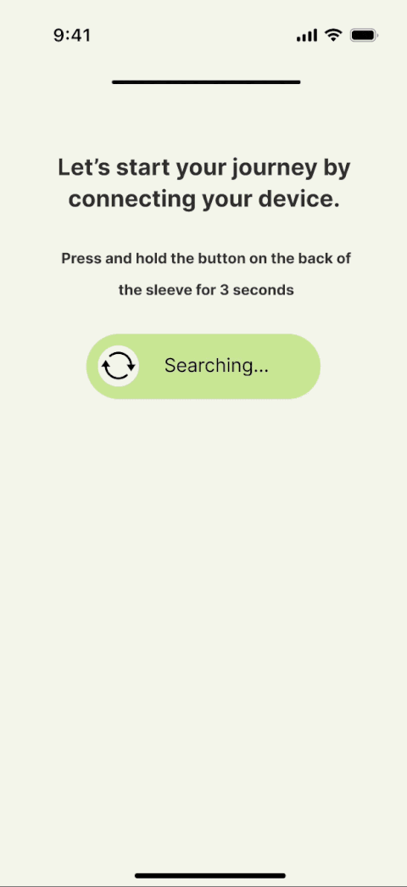
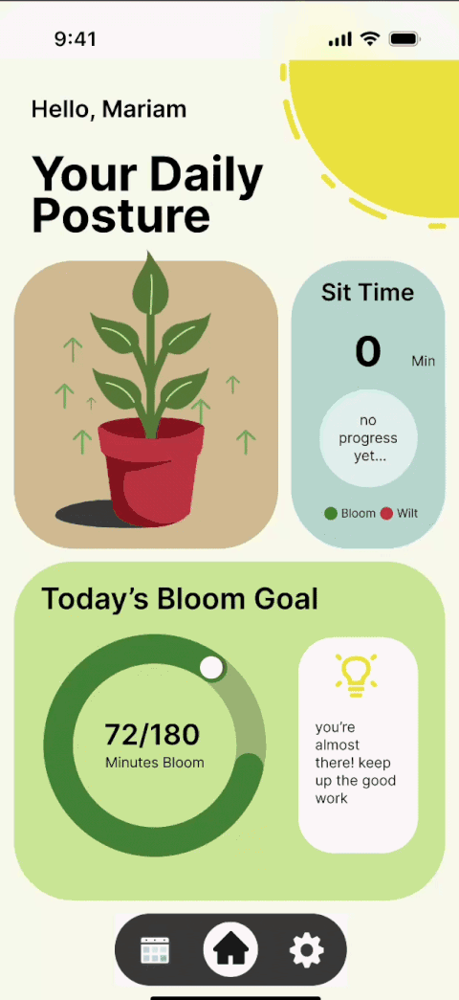
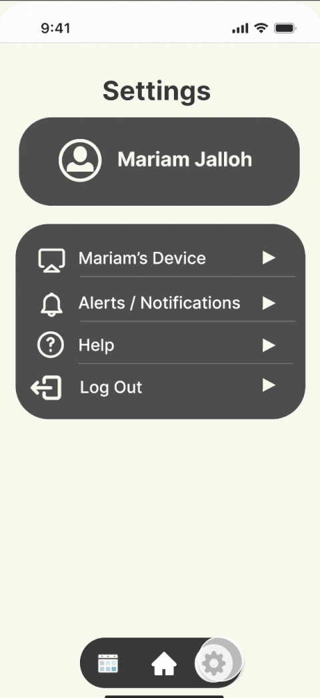

case study


Co-UX Designer · Texas Convergent · Sept–Dec 2025
StemUp
grow into better posture
StemUp is a smart chair-attachable device with a complementary mobile app to help students and workers track and improve posture during extended periods of sitting.
- Team size
- 3 · design, eng & biz
- Timeline
- 15wk · Sept–Dec 2025
- Demo Day
- ★ 1st · Best Design, 18 teams
context
A semester-long IoT build
As part of an IoT Build Team, I served as the designer, working with engineering and business students to develop both the prototype and the pitch we showcased at Demo Day. We spent a semester turning our novel idea into a minimum viable product through hands-on design and prototyping.
the problem
Our team was given the theme "Quality of Life." After brainstorming a range of ideas, we found that as students, we had all experienced discomfort from long hours of studying at our desks with poor posture. We set out to design a solution that could improve daily comfort and long-term well-being by promoting healthier posture habits in students and office workers.
How might we encourage better posture habits for people who spend long hours at their desks?
vision & priorities
The plant metaphor
Contributed to branding, interface design, and user flow for the StemUp app. Drew inspiration from Forest, a habit-forming app that uses nature imagery to promote productivity, and identified parallels between Forest's approach and StemUp's goal of encouraging healthy, consistent posture habits. Proposed the plant metaphor to symbolize personal growth and well-being, shaping the app's visual and conceptual identity.
Designed for simplicity and speed, ensuring posture tracking felt effortless: a minimal interface with limited scrolling and streamlined interactions.
onboarding
Welcoming, step by step
Designed the onboarding flow to feel welcoming and easy to follow.
Introduced the plant metaphor through a simple narrative to help users intuitively understand how their posture affects their well-being.
Guided users through device calibration using a progressive animation, visually signaling progress and reducing uncertainty during the setup process.


settings
Familiar, and personal
Modeled the layout after iOS Settings for familiarity, reducing cognitive load on users.
Utilized collapsible dropdown sections to minimize scrolling and help users quickly locate specific settings.
Provided users with control over when and how they receive notifications so they can personalize their experience to their needs.


differentiation & next steps
Where StemUp stands out
Benchmarked against existing posture products at Demo Day to show judges why a non-invasive, data-reporting device with an alert system was the stronger approach.
| Feature | Doctor Arthritis | The Natural Posture | Upright | StemUp |
|---|---|---|---|---|
| Non-Invasive Device | – | – | – | ✓ |
| Reports Data | – | – | ✓ | ✓ |
| Alert System | – | ✓ | ✓ | ✓ |
| Enhances Posture | ✓ | ✓ | ✓ | ✓ |
next steps
takeaways
What I walked away with
Tools